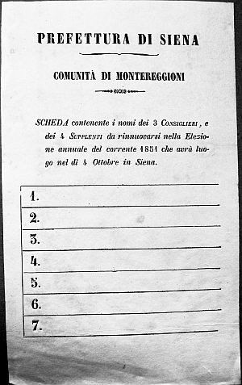

Prime elezioni amministrative comunali
Sul piano politico gli eventi che avevano scosso sia l’Europa che l’Italia portarono a concessioni statutarie e costituzionali da parte dei governi, ma furono portatori nel Granducato di Toscana di altre riforme come quella del territorio (9 marzo 1848) che vide sparire vicarie e podesterie (separando la funzione giurisdizionale da quella amministrativa), e la divisione regionale in sette compartimenti (Firenze, Lucca, Pisa, Siena, Arezzo, Pistoia e Grosseto), suddivisi a loro volta in distretti e comunità per la parte amministrativa. Poi, il 20 novembre 1849, venne approvato il nuovo regolamento sulle “Comunità” con la grande novità dell’introduzione del principio elettivo dei suoi componenti: non più sorteggio o tratta, ma libere elezioni popolari dalle quali rimaneva escluso il Gonfaloniere, nominato dal Granduca tra i consiglieri eletti. Questo avvenimento merita di essere approfondito, rappresentando un grosso stacco dal passato e sintomo del cambiamento dei tempi, e poi sono in assoluto le prime elezioni amministrative tenute nei nostri Comuni e, quindi, rivestono un significato particolare. Furono definite le competenze del Consiglio comunale cui spettava l’organizzazione elettorale: elezione dei priori nel suo ambito; bilanci e rendiconti; la gestione delle tasse; la composizione della deputazione per il reclutamento e l’arruolamento della guardia civica; l’assunzione dei dipendenti stabilendone i salari; competenze di polizia comunale; fiere e mercati e il generale tutto ciò che interessava il territorio della comunità con il Gonfaloniere che, comunque, rimaneva figura centrale dell’amministrazione. Passando velocemente il nuovo regolamento comunale vediamo che i priori sono eletti dal consiglio stesso
“in ischede segrete”; che il Granduca aveva la facoltà di sciogliere i consigli comunali; che il Gonfaloniere rimaneva in carica quattro anni; che gli arcivescovi, “parochi” e altri sacerdoti non potevano esser chiamati dal consiglio a far parte dei priori così come gli impiegati regi; che era prevista una multa di lire 100 a chi ricusava l’elezione; fissava il criterio numerico dei consiglieri previsti in otto per i Comuni fino a 2000 abitanti, e in dodici dai 2000 ai 4000 ecc.
Si trattò di una riforma in chiave moderna e democratica, come si specificava nel
“Manuale per gli elettori comunali”: “...è un esperimento dal quale potrà apparire manifestatamente la capacità delle nostre Popolazioni a praticare la libertà... ci è sembrata di tale importanza che ci ha determinato a richiamare con queste parole l'attenzione di quelli che dovranno esercitare il diritto di eleggere le nuove Magistrature municipali, tanto sulla importanza della istituzione, quanto sulle disposizioni che stabiliscono il modo di metterla in azione...”.
Parlando di elezioni democratiche non si deve esser tratti in inganno perchè il concetto di democrazia che abbiamo oggi non corrispondeva certamente a quello del Granduca e del suo governo, e gli elettori rappresentavano una minima percentuale della popolazione rientrando in questa categoria solo i cittadini proprietari di terre e immobili iscritti sul
“Ruolo generale dei contribuenti”. La normativa di procedura elettorale era un po’ cervellotica in quanto
“sono elettori i due terzi dei contribuenti alle tasse dirette”, ma se questo numero non raggiungeva il decuplo degli eletti, esempio 8 consiglieri da eleggere minimo 80 elettori, si dovevano aggiungere fino ad arrivare al detto decuplo. La legge prevedeva dei supplenti in numero non minore di quattro, e prevedeva che un quarto dei consiglieri si doveva rinnovare ogni anno.
Erano esclusi dalle liste degli
“eligibili” i condannati, i minori di 25 anni, gli stipendiati del Comune o coloro che rivestivano cariche ministeriali.
Nel periodo di passaggio alle nuove regole, i vecchi Gonfalonieri, assistiti dagli addetti al censo, dovevano metter mano alla formazione delle liste elettorali appendendole poi alla porta dell’ufficio comunale, dando così la possibilità di inoltrare reclami.
Il Gonfaloniere, inoltre, stabiliva il luogo delle elezioni e il giorno
“avendo cura che sia festivo”, con apertura del seggio alle 8 e chiusura alle 8 di sera, e a lui era affidata la direzione delle operazioni di voto e scrutinio coadiuvato dalla presenza di due assessori e da un attuario per la stesura del verbale.
Il votante doveva presentarsi col biglietto personale d’ingresso, ricevuto a domicilio o ritirato personalmente, firmato dal Gonfaloniere o da un suo delegato, e poteva dare tante preferenze quanti erano i nomi da eleggere
“e scriverà o si farà scrivere”.
Naturalmente c’era l’invito a scegliere uomini probi. Tralasciando altri numerosi articoli contenenti specifiche precisazioni sui votanti, sulle votazioni, sulle disposizioni penali, la loro ripetizione ecc., andiamo a vedere cosa avvenne per l’elezioni al Comune di Monteriggioni.
Occorse del tempo per esplicare quanto previsto, e il Gonfaloniere uscente fissò il giorno delle elezioni e dello
“squittinio” (scrutinio) per il 2 e il 3 febbraio 1850.
La lista comunale di Monteriggioni comprendeva un totale di 208 contribuenti; da questa base si partì per avere il numero degli elettori e degli "eligibili”.
Ci sono, nella rammentata lista generale dei contribuenti, alcuni nomi noti di Quercegrossa. Ricordo che il principio per l’iscrizione alla lista era quello del possesso e non della residenza, quindi abitando a Siena o Firenze, ma avendo proprietà in un comune diverso acquistavi il diritto al voto in quel comune. Sono contribuenti i quattro fratelli Andreucci, Filippo, Lodovico, Ferdinando e Angiolo figli del fu Giovan Francesco, proprietari della villa di Quercegrossa e di poderi con una rendita imponibile ciascuno di lire 575,40 (totale 2.301,6 lire); il Fusi Vincenzo di Basciano; il Diddi Galgano già proprietario dell’Arginano; Guidi Isidoro del Castellare con 838,43 lire; Pratesi don Gaetano della cura di Quercia con 30,76 lire; Ticci Antonio di Luigi con 241,00 lire e Vecchi cav. Girolamo, padrone della Casanuova, Montarioso e altri poderi, con 4.732 lire di rendita. Il più alto imponibile nel Comune apparteneva a Carlo Bianchi Bandinelli con lire 16.175,93 cui facevano da contraltare le modeste rendite di 22/27 lire dei proprietari della sola abitazione come il Cellerai Tommaso di Pasquale di Strove con 27,92 lire.
Da questo totale di 208 nominativi si calcolarono i due terzi, col risultato di avere 139 elettori (Lista n° 1) scelti tra i maggiori contribuenti, pari al 4,1% della popolazione del Comune stimata in 3.330 abitanti.
La lista comunale n° 2 degli elegibili conteneva poi 106 nomi, per l’esclusione di coloro privi dei requisiti per essere eletti.
C’era poi la Lista n° 3, prevista dall’art. 19 del regolamento
“intesa a dare ai maggiormente interessati una più larga influenza sugli affari del comune”, che obbligava il votante a scegliere la metà dei consiglieri tra coloro che avevano una rendita superiore alla media (Lire 619,73), calcolata sul totale imponibile comunale (lire 128.905,46) diviso per il numero delle rendite (208). Questa lista comprendeva 32 elegibili.
Il 23 gennaio 1850, il gonfaloniere A. Palmieri Nuti, in esecuzione alla legge del 20 novembre 1849, diffondeva un avviso per la convocazione dell’
”Adunanza comunale elettorale” che si sarebbe tenuta dalle 8 della mattina alle 8 della sera nella villa della Chiocciola dell’ill.mo Sig. G. Battista Perini Brancadori. L’avviso conteneva tutte quelle regole pratiche e le possibilità offerte all’elettore che in qualche modo gli facilitavano il compito per addivenire al voto.
Essendo i consiglieri da eleggere in numero di 12, e 4 supplenti, ogni elettore doveva presentare la propria scheda comprensiva dei 16 nominativi, scritta di
“proprio carattere”, oppure fatta scrivere da persona di fiducia dentro o fuori
“del recinto stesso dell’Adunanza”. Chi avesse trovato qualche incomodo a recarsi alla detta villa, poteva consegnare la scheda compilata al Gonfaloniere in Siena al suo domicilio, o al suo impiego di lavoro, ossia all’Opera di Provenzano, dal 28 gennaio al 1 febbraio. Il tal caso la scheda doveva essere chiusa, sigillata e firmata “sopra coperta” dall’elettore stesso, ma la firma doveva essere autenticata “recognita da un notaro”. Nelle elezioni successive alcune schede sono recapitate con la posta.
L’avviso informava che se la votazione avesse avuto effetto (era necessario a questo fine il voto di un terzo degli elettori)
“sarà proceduto nel dì 3 allo Squittinio”. Infine faceva appello agli elettori sull’importanza dell’operazione alla quale erano chiamati, e a essere solleciti e premurosi nell’esercitare così il prezioso diritto
“e compiere al tempo stesso un vero dovere di buon cittadino”. “Dalla Residenza comunale di Monteriggioni - Il Gonfaloniere”.
La mattina del 2 febbraio 1850, alle ore 8, il Gonfaloniere, assistito dai due assessori G. B. Perini Brancadori e Bernardino Licciuoli, aprì l’Adunanza degli elettori. Le schede a lui inviate da alcuni elettori, come concesso dal regolamento, furono deposte sul banco. Per l’intera giornata si presentarono i votanti che avevano a disposizione un tavolino a parte per annotare i nomi sulla scheda, o farsela scrivere da persone di fiducia anche fuori della stanza elettorale. In chiusura, furono sigillate e firmate le urne e redatto il verbale dall’attuario Felice Petessi.
La mattina successiva, alle 8,30, il Gonfaloniere, con i due priori, aprì l’Adunanza per tenere lo squittinio previsto:
“Riconosciuta dal seggio l’incolumità dei sigilli si è devenuto all’infrazione dei medesimi ed aperto l’involvente delle schede pervenute al Gonfaloniere”. Contate poi le schede nell’urna riscontrarono essere 54 e, quindi, risultando superiori a un terzo degli elettori (139) convalidavano l’elezione.
Procedendo poi con lo spoglio delle schede, registrando ogni preferenza su apposito registro scrivendovi ogni nominativo non in ordine alfabetico, ma rispettando la lettura delle schede, il che deve aver richiesto tutta la giornata contenendo ogni pagina del registro 5 nominativi e sfogliandolo quindi continuamente, si ebbe il seguente risultato:
Consiglieri
Griccioli Avv. Pietro voti n° 50
Bindi Sergardi Francesco voti 42
Palmieri Nuti Cav. Antonio voti 40
Grottanelli Prof. Stanislao voti 38
Bargagli Cav. Angiolo voti 33
Mignanelli Cav. Alfonso voti 28
Liccioli Bernardino voti 28
Borghesi Avv. Scipione voti 27
Andreini Gusmano voti 23
Senesi Francesco voti 22
Clementini Piccolomini Carlo voti 22
Diddi Galgano voti 22
Supplenti
Bianchi Bandinelli Carlo voti 21
Vecchi Cav. Girolamo voti 21
Andreucci Lodovico voti 21
Brancadori Giov. Batt. voti 20
Esclusi
Bandini Policarpo voti 20
Giuggioli Giuseppe voti 19
Buonsignori Ricciardo voti 18
Di conseguenza i primi dodici vennero ritenuti legalmente eletti come consiglieri e gli ulteriori quattro come supplenti. Gli altri tre, pur avendo ottenuto il voto legale necessario per essere eletti, ossia un terzo del numero dei votanti, rimanevano esclusi. Ottennero almeno una preferenza 67 elegibili, e c’è da riconoscere che i candidati di Quercegrossa non ebbero un grande successo con i soli Lodovico Andreucci e il cav. Girolamo Vecchi rientrati tra i supplenti: Andreucci Filippo ebbe 3 preferenze e Ferdinando 4; Fusi Vincenzo 1; Ticci Antonio 3; don Gaetano Pratesi 2; Isidoro Guidi 17.
Terminate le operazioni di scrutinio vennero bruciate le schede, come da regolamento, e infine dichiarata chiusa l’adunanza e firmato il verbale:
Cav. A. Palmieri Nuti Gonfaloniere Presidente
Francesco Bindi Sergardi Squittinatore
Tiberio Bichi Borghesi Squittinatore
Felice Petessi Attuario.
L’8 febbraio seguente erano convocati gli eletti con avviso personale e non si presentavano in riunione i sigg. Andreini, Grottanelli e Mignanelli. Agli altri otto il gonfaloniere Palmieri Nuti (eletto anch’esso) leggeva i verbali dell’elezione e dello squittinio che erano approvati e riconosciuti
“in piena regola”. Si verificava poi, e si prendeva atto che ogni consigliere avesse i requisiti per essere eletto, e se si era rispettata la percentuale della famosa lista n° 3, cioè la rappresentanza della metà di quelli che avevano un reddito superiore alla media reddituale. Considerato poi che il Sig. Gusmano Andreini era in quel momento camerlingo del Comune di Monteriggioni e visti gli articoli del regolamento dai quali risultava incompatibile, decadde dalla carica di consigliere. Procedendo alla sostituzione era scelto tra i supplenti Bianchi Bandinelli Carlo, il quale, pur avendo ottenuto gli stessi voti del cav. De Vecchi, era preferito dalla Legge. Di conseguenza Bandini Policarpo diveniva il quarto supplente.
Al termine, dopo la lettura della lettera del Mignanelli per la quale il consiglio si dichiarava non competente per i casi di rinuncia, si procedeva all’approvazione del processo verbale che otteneva l’unanimità, con l’astensione del Gonfaloniere.
Faceva seguito, a questa preliminare riunione, la nomina del nuovo Gonfaloniere da parte del Granduca nella persona del primo eletto Pietro Griccioli, e la prima vera riunione del Consiglio comunale il 14 maggio 1850. Si registrarono in quella circostanza diverse defezioni e rinunce perchè alcuni consiglieri optarono per altre comunità nelle quali erano stati ugualmente eletti. Si arrivò così dopo alcuni mesi alla seconda tornata elettorale per l’annuale rinnovo di tre consiglieri, previsto dal regolamento con la situazione espressa dall’avviso del 23 settembre 1850 (vedi foto fine pagina).
Le elezioni e lo scrutinio per il rinnovo di un quarto del consiglio, cioè di tre consiglieri e di un supplente, si tennero a Siena nel Palazzo Bindi Sergardi, in Via dei Pellegrini al numero 829, nelle giornate del 28/29 settembre 1850. Le liste e note erano affisse, come di consueto, nella cancelleria comunitativa di Siena e nelle porte delle chiese del Comune di Monteriggioni.
L’elezione fu convalidata essendo intervenuti di persona 44 elettori e 5 per posta, con un totale di 49 votanti di fronte a un quorum di 46 (i 139 elettori si erano ridotti a 136 a causa di tre decessi). Appare subito alla vista l’esiguità di questa differenza e diminuendo ancora la partecipazione al voto nell’anno seguente si renderà necessario riconvocare l’Adunanza fino a tre volte.

Scheda elettorale del 4 ottobre 1851 per l’elezione di 3 consiglieri e 4 supplenti.
Infatti, al secondo turno del 14 dicembre 1851 si ebbero soltanto 35 votanti, invece dei 46 richiesti, e ciò portò alla convocazione del terzo e ultimo turno dopodiché, persistendo la mancanza del numero legale, scattava la nomina d’ufficio da parte granducale. Ricordo la norma indicante che pur mancando il numero legale lo scrutinio veniva ugualmente effettuato perchè nella seguente tornata l’elettore doveva scegliere soltanto tra i nominativi che avevano ottenuto preferenze nella votazione annullata.
Questa, e tutte le altre complesse norme che già avevo definito cervellotiche, denotarono la mancanza d’esperienza nei legislatori, i quali non si resero conto di complicare un evento di per sè stesso semplice, non corrispondendo la legge a principi di funzionalità e concretezza. Soprattutto si rivelò dannosa la convocazione annuale dell’Adunanza per eleggere un quarto dei Consiglieri. Tutto questo provocò, fin dopo la prima elezione per la quale non si era registrato un grande entusiasmo nella partecipazione, la disaffezione degli elettori, annoiati da questo continuo assillo di bandi, lettere, schede e votazioni. Era già chiaro l’affanno della Legge, ma a questo rimediò il Granduca che nel suo intento di soffocare e annullare le concessioni fatte, abolì anche la legge elettorale nel 1853 e si ritornò al vecchio sistema della tratta ossia dell’estrazione a sorte. Si deve aspettare il governo provvisorio Toscano per riconvocare gli elettori nel 1859.
Niente sappiamo di come vennero accolte le prime elezioni comunali, anche se non rappresentavano in assoluto la novità elettorale in quanto i seggi si erano già aperti nel 1848 per l’elezione dei deputati all’Assemblea legislativa. Impressioni e stati d’animo degli elettori e degli eletti ci sfuggono: non una riga di commento nè una nota a margine. Si trattò solo di una formalità, oppure fu sentito come un memorabile avvenimento? Si parlò di programma? Si allacciarono alleanze per l’elezione di qualcuno? Chissà. Certamente la scarsa partecipazione elettorale è già sintomatica di un diffuso disinteresse e probabilmente c’era ancora verso l’istituzione comunale quella indifferenza congenita delle popolazioni e dei proprietari tutti presi dai loro affari e restii a perder tempo con scartoffie e preoccupazioni; tanto più che gli stessi gonfalonieri e priori, da sempre residenti in Siena, vedevano l’incarico come un obbligo al quale concedevano soltanto il tempo indispensabile, arrivando perfino a gestire le pratiche comunali dalle proprie abitazioni cittadine come si evidenzia nelle elezioni sopracitate e come avveniva da decenni.
Scheda di Ferdinando Andreucci autenticata dal notaio fiorentino Anzilotti.